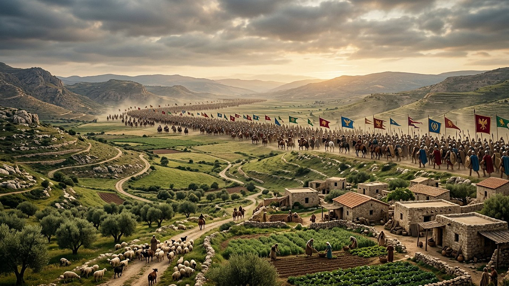
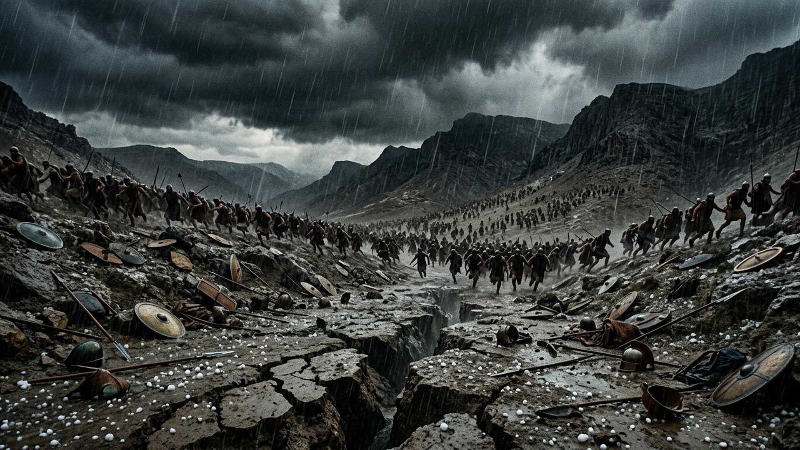
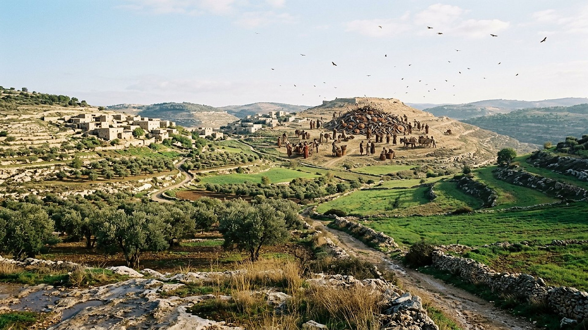

Salle 31 — Ézéchiel À VENIR
Gog de Magog : la coalition qui montait du nord
« Tu monteras contre mon peuple d'Israël, comme une nuée qui couvre le pays. » — Ézéchiel 38:16 (d'après Crampon 1904)
Reconstitution numérique — la nuée de la coalition, au-dessus des villages sans défense.
La troisième grande vision d'Ézéchiel
Après la vallée des ossements (salle 24) et le temple mesuré (salle 26), Ézéchiel reçoit une troisième annonce, en deux chapitres (38-39) : dans « la suite des années », un chef nommé Gog, du pays de Magog, entraînera une coalition de peuples du nord et des confins contre un peuple « revenu de l'épée », rassemblé sur les montagnes et vivant « en sécurité, tous sans murailles, sans barres ni portes » (38:8-11). Le mobile est énoncé sans fard : piller un pays sans défense. La réponse annoncée n'est pas une bataille rangée : Jéhovah intervient lui-même — tremblement de terre, épidémie, pluie torrentielle, grêle et feu (38:19-22) — puis vient le long nettoyage du pays (39:9-16).
Cette salle applique, plus strictement encore que les autres, la règle de neutralité du musée : aucun peuple, aucun État, aucun dirigeant d'aujourd'hui n'est identifié à Gog ni à ses alliés. Les noms anciens sont lus sur la carte ancienne, et l'accomplissement est classé À VENIR, sans date.

La coalition, nom par nom
Explorer chaque nom de la liste d'Ézéchiel 38 : où le situent les sources anciennes, et ce qu'il faut se garder d'en conclure.
Le récit en cinq temps
Faites avancer la vision.
Temps 1 / 5

Les identifications, classées
DÉBATTU
« Gog » serait Gygès de Lydie
L'hypothèse savante la plus citée : les annales d'Assurbanipal nomment « Gugu, roi de Luddu » — Gygès, roi de Lydie au VIIe siècle, à la tête des mêmes horizons anatoliens que Mèshek et Tubal. Magog serait alors « le pays de Gog ». Un prototype historique possible du nom, un siècle avant Ézéchiel ; mais aucun consensus, et le Gog de la vision excède tout roi ancien : il agit « dans la suite des années », contre un peuple restauré.
LECTURE PROPHÉTIQUE
Une coalition, pas un pays
Dans la lecture retenue par ce musée : Gog désigne le chef — humain et symbolique — d'une coalition de nations qui, dans la phase finale, s'en prendra au peuple de Dieu restauré et sans défense. La liste des alliés couvre alors les quatre horizons du monde connu (nord, orient, midi, occident marchand) : une image d'ampleur mondiale plutôt qu'une carte d'état-major. Conformément à la règle du musée, aucun pays moderne n'est nommé, et la direction de cette coalition n'est pas attribuée à une puissance précise.
DÉBATTU
Et « Gog et Magog » dans la Révélation ?
Le nom reparaît une fois, en Révélation 20:8, pour une révolte ultime « aux quatre coins de la terre », postérieure au règne de mille ans. Même nom, autre scène : la salle signale le renvoi sans fusionner les deux récits, que les traditions d'interprétation articulent diversement. La chronologie fine relève de la salle 15, qui la présente sans aucune date.
Salle 24 : la vallée des ossements · Salle 26 : le temple d'Ézéchiel · Salle 15 : ce qui vient
Écouter la salle
Transcription de la narration
Bienvenue dans la salle de Gog de Magog. Après la vallée des ossements et le temple mesuré, Ézéchiel reçoit une troisième vision : une coalition de peuples, menée par un chef nommé Gog, monte contre un peuple restauré qui vit en sécurité, sans murailles. Explorez d'abord les noms de la coalition sur la carte ancienne : l'Anatolie, la Perse, les confins du monde d'alors, et même des marchands qui refusent de marcher. Puis parcourez le récit en cinq temps, du dessein de pillage à l'intervention annoncée, jusqu'au long nettoyage du pays. Une règle absolue dans cette salle : aucun pays, aucun dirigeant d'aujourd'hui n'est identifié à Gog. La scène est classée à venir, sans date, et c'est le texte, pas l'actualité, qui y parle.